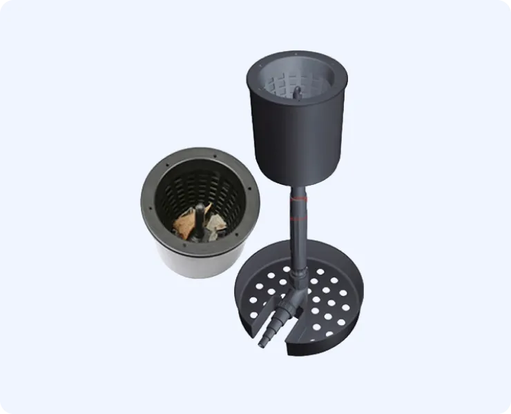

Скиммеры
Скиммер для пруда SK-50 донный, площадь очистки 80м²
Цена и наличие
Цена уточняется. Нет в наличии.
Данные на 23.11.2026.
Характеристики
- Площадь очистки
- 80м²
- Бренд
- Jebao
- Подходит для насоса с производительностью
- До 16000 л/ч
- Габариты
- 35 х 35 х 87 см
- Материал
- Пластик
- Страна
- Китай
Описание
SK-50 - донный скиммер для пруда.
СКИММЕР ДЛЯ ПРУДА JEBAO SK-50 ДОННЫЙ, 80М2 ПЛОЩАДЬ ОЧИСТКИ Стационарный, устанавливается на дно (от 35 до 85 см), рекоменд. произв-ть насоса (опция) 4 500 – 16 000 л/ч, автоподстройка уровня воды, универсальный штуцер для шлангов от 12 до 38 мм диаметром Скиммеры предназначены для эффективной очистки поверхности садового пруда от плавающих предметов: пыли, листьев, цветочной пыльцы, остатков корма рыб и других загрязнений, которые вызывают избыточный рост водорослей и делают воду мутной. Внутр. диаметр чаши 15 см Внешний диаметр чаши 19,5 см Эффективная очистка поверхности водоема от мусора, листьев Дополнительная механическая фильтрация воды Дополнительная аэрация воды Размещение в любом месте водоема с глубиной от 30 до 85 см Просты в обслуживании, легко освобождаются от мусора